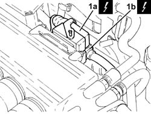
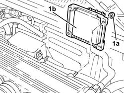
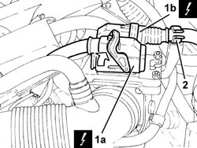
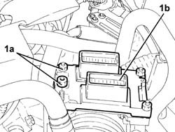

1056B82 INJECTION/IGNITION SYSTEM E.C.U. (ONE) - R + R
- Path
- Procedures > 10 ENGINE UNIT > 1056 PETROL INJECTION SYSTEM > 1056B MULTI-POINT INJECTION SYSTEM (MPI) > 1056B82 INJECTION/IGNITION SYSTEM E.C.U. (ONE) - R + R
- Kind
- repair procedure (removal / refitting; the operation number is the code)
- Applies to
- engines: 1.8 T.SPARK, 3.2 V6; all production periods
- Interactive page
- https://sloeber94.github.io/elrnDB-aGt/en/#/125002608
Applies to: engines: 3.2 V6; all production periods
 Removing
Removing
 Refitting
RefittingEnsure that the ignition key is in the OFF position, then disconnect the negative battery terminal (-).
Name | Connector | |
|---|---|---|
- | Battery |
1. Disconnect the electrical connections (1a) and (1b) from the injection/ignition system control unit.
Name | Connector | |
|---|---|---|
1a | Engine management control unit |
Name | Connector | |
|---|---|---|
1b | Engine management control unit |

Applies to: engines: 3.2 V6; all production periods
1. Undo nuts (1a) and remove injection/ignition control unit (1b).

Applies to: engines: 3.2 V6; all production periods
Refitting
RemovingPlace the injection/ignition system control unit back in its housing and fix it using the bolts.
Connect the electrical connections to the fuel injection/ignition control unit.
Connect the negative (-) battery terminal
Applies to: engines: 1.8 T.SPARK; all production periods
Removing
RefittingEnsure that the ignition key is in the OFF postition, then disconnect the battery negative terminal.
Name | Connector | |
|---|---|---|
- | Battery |
1. Disconnect electrical connections (1a) and (1b) from the injection-ignition control unit.
Name | Connector | |
|---|---|---|
1a | Engine management ECU |
Name | Connector | |
|---|---|---|
1b | Engine management ECU |
2. Release the electrical wiring from the fastening on the ignition/injection system control unit mount.

Applies to: engines: 1.8 T.SPARK; all production periods
1. Undo nuts (1a) and remove the single injection/ignition control unit (1b).

Applies to: engines: 1.8 T.SPARK; all production periods
Refitting
RemovingApplies to: engines: 1.8 T.SPARK; all production periods
Place the single injection/ignition system control unit back in its housing and secure it by tightenng the bolts to the specified torque.
Fastening | Component | Ø | Value (daNm) | |
|---|---|---|---|---|
- | Nut | INJECTION/IGNITION SYSTEM E.C.U. | M6 | (Support side) 0.8÷1.1 |
Connect the electrical connections to the injection-ignition control unit and secure the electrical wiring to the ignition/injection system control unit mount.
Connect the battery terminal (-).